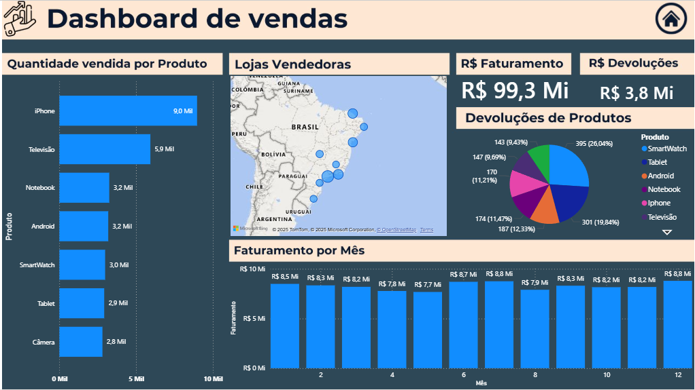

Objetivo do Projeto
Criar um painel interativo no Power BI para análise de vendas e devoluções, acompanhando desempenho e tendências de mercado.
Bases de Dados
- Base Vendas: SKU, Produto, Quantidade, Preço, Cliente, Loja, Data
- Base Devoluções: SKU, Produto, Quantidade Devolvida, Preço, Loja, Data
Principais KPIs / Fórmulas DAX
- Receita Total:
SUMX('BaseVendas', 'BaseVendas'[Quantidade Vendida] * 'BaseVendas'[Preço Unitário])
- Impacto Financeiro:
SUMX('BaseDevolucoes', 'BaseDevolucoes'[Quantidade Devolvida] * 'BaseDevolucoes'[Preço Unitário])
Insights Extraídos
- Faturamento Total: R$99.300.000,00
- Produto mais vendido: iPhone (HL1918)
- Maior receita por loja: Loja São Paulo
- Maior índice de devoluções: SmartWatch (HL7348)
- Impacto financeiro das devoluções: R$3.800.000,00
- Mês de maior faturamento: Julho (R$8.758.600,00)
Ferramentas Utilizadas
Power BI
Excel
DAX
Notion
Arquivos e Recursos
← Voltar aos Projetos